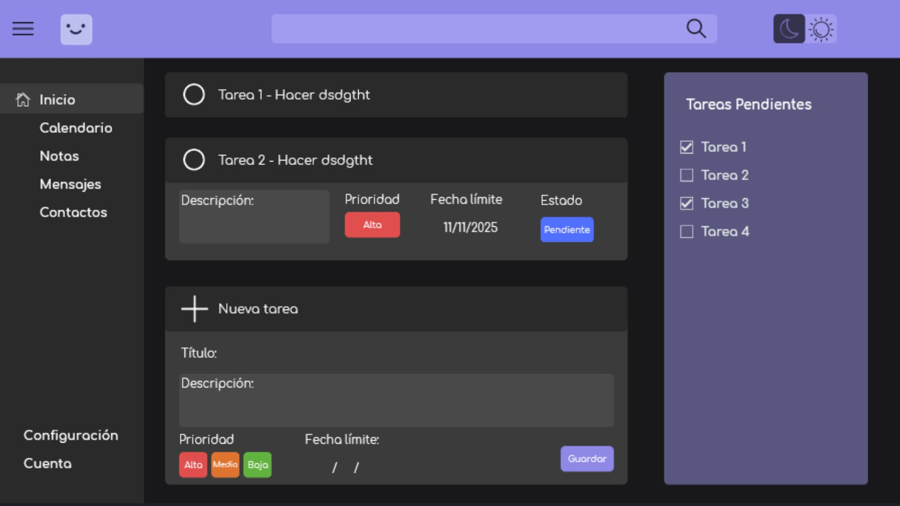

Sobre mí

Soy estudiante de Desarrollo de Aplicaciones Web (DAW) enfocado en la creación de software robusto y el diseño de interfaces intuitivas. Busco incorporarme a una empresa del sector tecnológico en la zona de Valencia para aportar mis conocimientos en arquitectura de software y bases de datos.
Actualmente busco un puesto a media jornada o fines de semana, con disponibilidad para jornada completa a partir de mediados de junio. Destaco por mi capacidad para resolver problemas complejos y mi interés por aprender continuamente nuevas tecnologías.
Proyectos
1. App "Planify"
Descripción: Participación en la fase inicial de desarrollo y diseño de una aplicación de gestión de tareas en equipo. El trabajo requirió adaptación ágil a reestructuraciones del grupo de desarrollo.
Tecnologías: UI/UX, GIT, HTML, CSS y JS.
Evidencia: 
Reflexión: Este primer proyecto fue clave para asentar mis bases en maquetación web (HTML/CSS) y desarrollar mi creatividad al diseñar la experiencia de usuario desde cero, gestionando el control de versiones con GIT.
2. Web de Club de Fútbol (Cantora FC)
Descripción: Diseño y desarrollo completo (desde cero) de la página web oficial para un equipo de fútbol amateur.
Tecnologías: GIT, HTML, CSS y JS.
Evidencia: Ver código en GitHub.
Reflexión: Aprendí a gestionar el flujo de trabajo colaborativo mediante ramas en GIT y consolidé mis habilidades en el desarrollo frontend interactivo con JavaScript.
3. Proyecto VYRO
Descripción: Desarrollo activo de una aplicación educativa como parte de un proyecto troncal. Trabajo en un entorno de repositorio privado simulando condiciones reales de empresa.
Tecnologías: SQL, HTML, CSS, JS, GIT.
Evidencia: Implementación de esquemas relacionales y consultas estructuradas (Código bajo privacidad del repositorio académico).
Reflexión: Este proyecto me está permitiendo integrar el frontend con la persistencia de datos, fortaleciendo mi capacidad de adaptación y resolución de problemas técnicos en un desarrollo en curso.
Formación y Competencias
Formación Académica
- Grado Superior en Desarrollo de Aplicaciones Web (DAW) - En curso
- Bachillerato de ciencias y tecnología. - Completado
Competencias Técnicas
- Lenguajes y BD: Java, HTML, CSS, JS, SQL, PL/SQL.
- Herramientas: VS Code, IntelliJ IDEA, GitHub, Office.
- Diseño: UI/UX, creación de mockups.
Reflexión Final y Plan de Mejora
Como futuro desarrollador, mi plan a corto plazo es seguir dominando los entornos de bases de datos y la arquitectura de software. Para la autoevaluación completa, he reflexionado sobre mis áreas de crecimiento técnico y habilidades transversales de cara a mi próxima inserción laboral.
Contacto
Si buscas un perfil junior con ganas de aportar valor técnico y seguir aprendiendo, no dudes en contactarme: